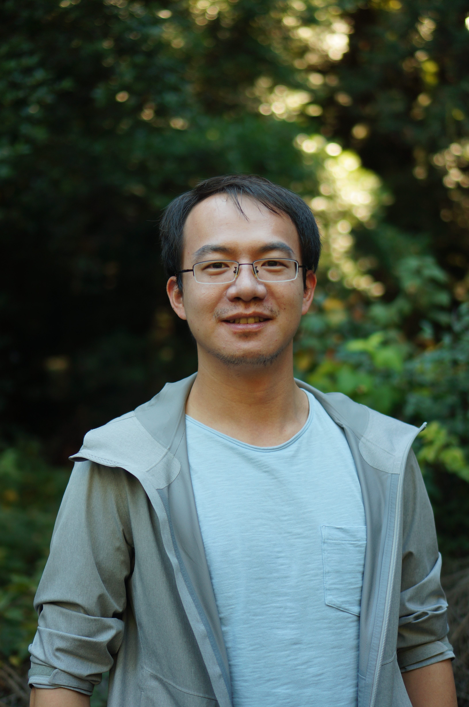

|
Chao Chen
|
 |
Assistant Professor
Department of Mathematics
North Carolina State University
Contact: chao_chen@ncsu.edu
Office: SAS 4236
|
About
I was an intern at Nvidia Research in summer 2018, an intern at Center for Computing Research in Sandia National Laboratories for three summers (2015-2017), and an intern at Computational Materials Science Group in Lawrence Livermore National Laboratory in summer 2013.
Research Interests
|